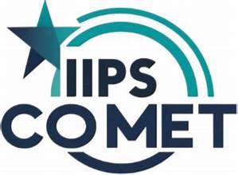
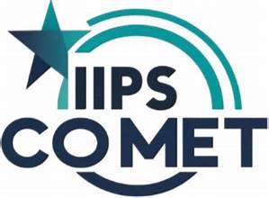

In Collaboration with
INSTITUT MINES - TELECOM BUSINESS SCHOOL, FRANCE
IIPS-CoMET 2026
Integrating Interdisciplinary Perspectives and Solutions - Conference on Management, Entrepreneurship & Technology
February 27-28, 2026 | International Institute of Professional Studies
3
Conference Tracks
3+
Keynote Speakers
100+
Expected Papers
Hybrid
Mode